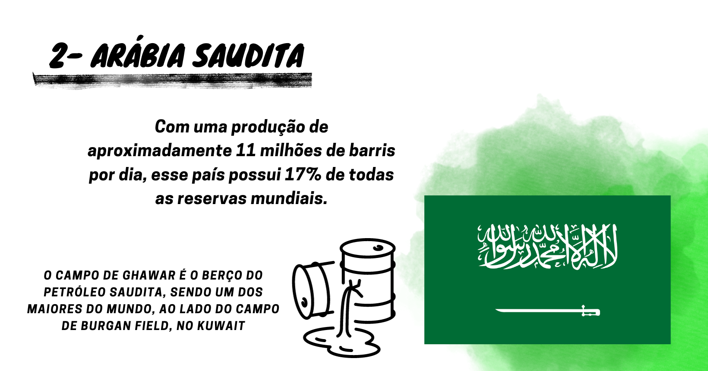
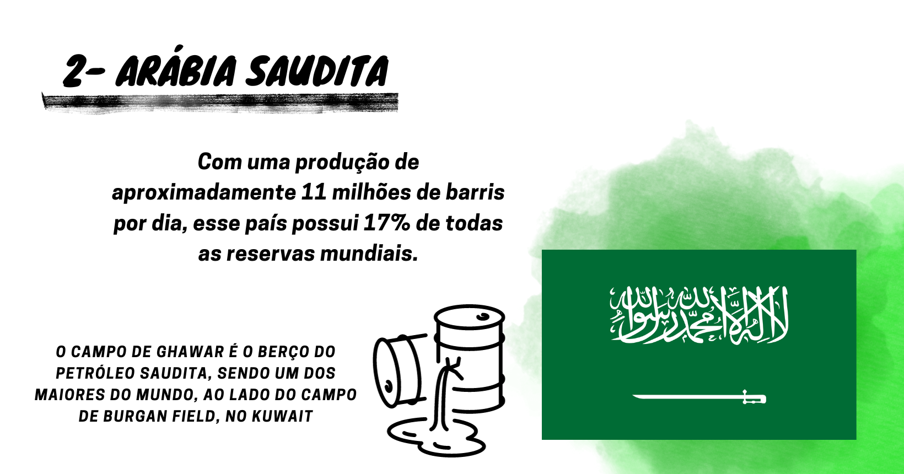
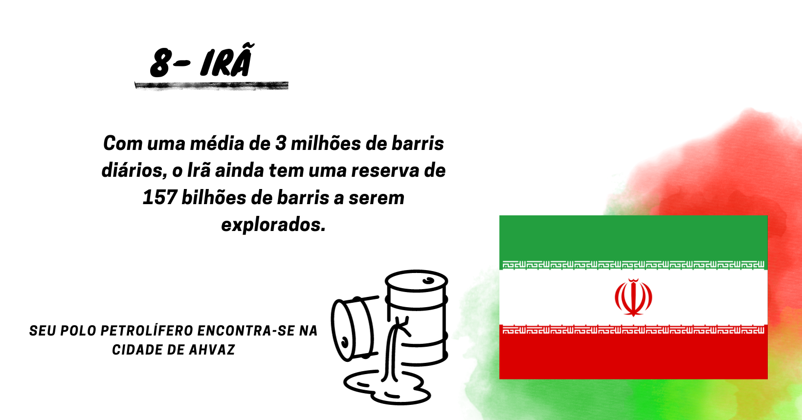
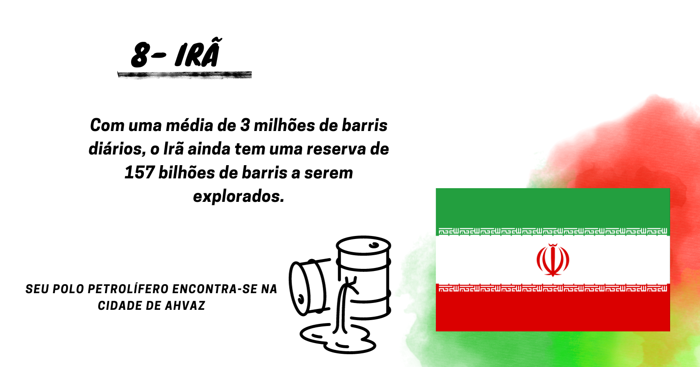
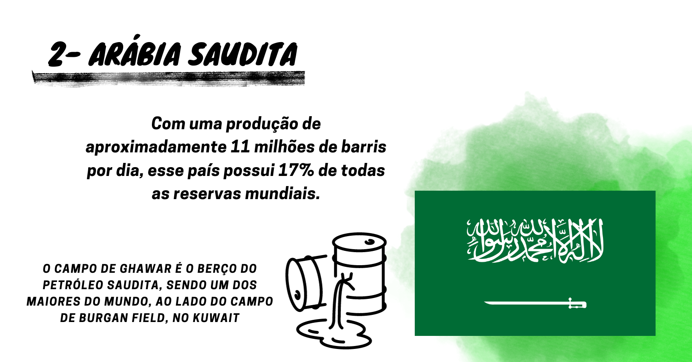
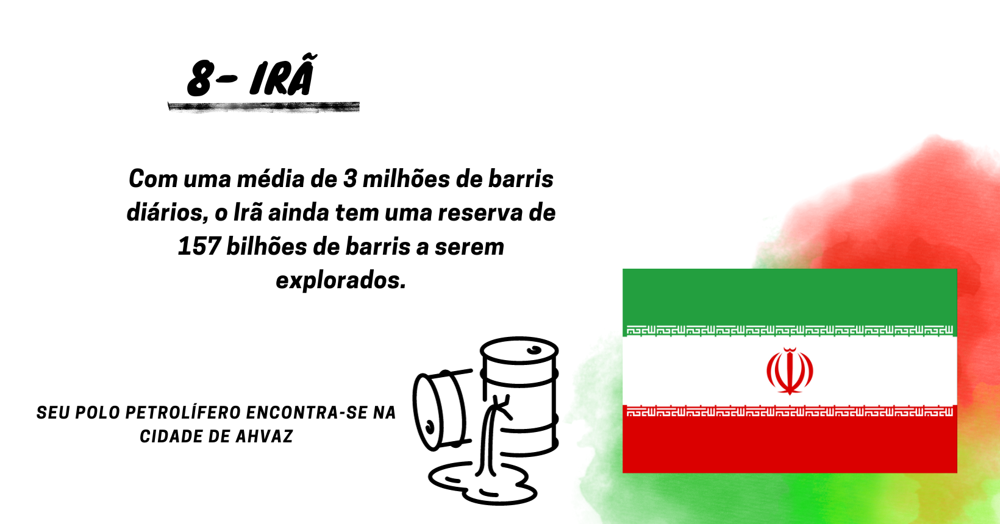

 

O petróleo, uma substância que permeia a nossa sociedade de forma ampla e profunda, possui uma história fascinante que merece ser explorada. A trajetória do petróleo, desde a sua descoberta até os dias de hoje, é repleta de impactos econômicos, políticos e ambientais que moldaram o mundo em que vivemos. Portanto, é essencial despertar a atenção das pessoas para estudar mais sobre essa matéria-prima preciosa.
saiba mais"Verdade e coragem deveriam guiar o curso do homem, mas agora petróleo e dinheiro o guiam"
O petróleo é uma substância natural formada a partir de restos de plantas e animais antigos que se acumularam no fundo dos oceanos há milhões de anos (acredita-se que, principalmente, pela decomposição das algas). Ele é uma fonte de energia fóssil que desempenha um papel fundamental em nossa sociedade atual. Neste material, vamos explorar sua utilização como fonte de energia, os derivados do petróleo, sua obtenção, crises históricas, impactos ambientais e a história do petróleo no Brasil. O petróleo é um líquido espesso e escuro encontrado em reservatórios subterrâneos, geralmente em formações rochosas sedimentares. Essa substância é geralmente refinada para produzir diferentes tipos de combustíveis, como gasolina, diesel e querosene, que são utilizados em automóveis, aviões, navios e geradores de energia.
Os Estados Unidos da América são reconhecidos como o maior produtor de petróleo do planeta, com mais de 16 milhões de barris extraídos por dia. Além disso, o país detém 4% das reservas totais do mundo, contando com cerca de 68,8 bilhões de barris para serem explorados. Assim, o país é um importante player mundial quando o assunto é indústria petrolífera.
Em agosto de 1859 o americano Edwin Laurentine Drake, perfurou o primeiro poço para a procura do petróleo, na Pensilvânia. O poço revelou-se produtor e a data passou a ser considerada a do nascimento da moderna indústria petrolífera. Apesar disso, existe a teoria de que um poço já havia sido construído pelos chineses no ano 347 antes de Cristo.
No ano de 2022, as produções anuais médias de petróleo e de gás natural foram recordes. A de petróleo foi de 3,021 milhões de barris/dia (bbl/d), valor 2,47% acima do recorde que foi observado no ano de 2020, quando atingiu 2,948 milhões de bbl/d.
Além dos combustíveis, o petróleo também é utilizado como matéria-prima para a produção de uma ampla gama de produtos. Dentre os principais derivados do petróleo estão o plástico, os lubrificantes, as ceras, os asfaltos, os fertilizantes e até mesmo alguns produtos químicos usados na indústria farmacêutica.
A obtenção do petróleo ocorre através da perfuração de poços de petróleo em locais identificados como reservatórios, geralmente, em grandes bacias sedimentares (região rochosa formada por várias camadas de sedimentos superpostas que podem ser restos de animais e vegetais). O processo envolve a utilização de sondas e plataformas de perfuração para alcançar as camadas onde o petróleo está localizado. Quando o petróleo é extraído, ele é transferido até refinarias, onde é processado para produzir os diferentes derivados. O refinamento do petróleo consiste em um processo complexo que visa transformar o petróleo bruto, uma substância cru e impura, em produtos úteis que são utilizados comercialmente.
Nas refinarias, o petróleo passa por diversas etapas de separação, transformação e tratamento. Em um primeiro momento, o petróleo bruto passa pela destilação, na qual é aquecido em uma torre de destilação, permitindo a separação dos componentes em diferentes faixas de temperatura. A partir dessa destilação, são obtidos produtos como gás liquefeito de petróleo (GLP), gasolina, querosene, óleo diesel e óleo combustível. Em seguida, ocorrem processos de conversão ou transformação, como craqueamento catalítico por exemplo, onde moléculas mais pesadas do petróleo são quebradas e reestruturadas para produzir produtos de maior valor, como gasolina de alta octanagem (maior capacidade de resistência à altas temperaturas sem que ocorra detonação). Além disso, o petróleo também passa por tratamentos para remoção de impurezas e implementação de aditivos, garantindo a qualidade dos produtos finais.
Podemos resumir o processo de extração em si em três etapas: Prospecção (localização de depósitos em bacias sedimentares usando análises do subsolo); perfuração(após a marcação do depósito, ocorre a perfuração do local e análise de sua viabilidade econômica de extração); extração(com os equipamentos necessários e utilizando os processos citados anteriormente, o petróleo é extraído e refinado, seja em terra ou em plataformas oceânicas).
Durante a história moderna, o petróleo desempenhou um papel crucial como fonte de energia e também foi responsável por diversas crises e conflitos globais. Desde as primeiras descobertas e explorações no início do século XX, o petróleo se tornou uma indústria em expansão, com reservas encontradas nos Estados Unidos, Rússia, Oriente Médio e em outras regiões. A importância estratégica do petróleo ficou evidente durante a Primeira Guerra Mundial, quando a demanda por essa energia cresceu exponencialmente para abastecer as máquinas de guerra. O controle das reservas e as interrupções no fornecimento tornaram-se fontes de conflitos e escassez, afetando a dinâmica global. No entanto, foi na crise do petróleo de 1973 que o mundo testemunhou uma situação especialmente impactante. Em resposta ao apoio ocidental a Israel na Guerra do Yom Kippur, a OPEP (Organização dos Países Exportadores de Petróleo) impôs um embargo ao petróleo, reduzindo drasticamente suas exportações para países ocidentais. Essa ação resultou em uma crise de energia global, com preços do petróleo atingindo níveis recordes e escassez em diversas partes do mundo. A crise do petróleo de 1979 adicionou mais instabilidade ao cenário. A Revolução Iraniana interrompeu significativamente as exportações de petróleo do Irã, enquanto a Guerra Irã-Iraque intensificou as tensões no Golfo Pérsico, colocando em risco o fornecimento global de petróleo. Novos choques nos preços ocorreram e a instabilidade no mercado persistiu.
Outro conflito importante relacionado ao petróleo foi a Guerra do Golfo em 1990. A invasão do Kuwait pelo Iraque, liderada por Saddam Hussein, gerou uma resposta militar da coalizão internacional. Essa guerra foi amplamente motivada pela busca pelo controle das vastas reservas de petróleo do Kuwait, uma vez que garantir o fornecimento e evitar desequilíbrios econômicos globais era uma preocupação central da coalizão liderada pelos Estados Unidos. A volatilidade dos preços do petróleo também se mostrou evidente durante a crise financeira de 2008. A desaceleração econômica resultante da crise global levou a uma queda na demanda de petróleo, ocasionando uma redução nos preços. No entanto, a recuperação rápida dos preços e a posterior alta histórica destacaram a volatilidade inerente ao mercado do petróleo. Atualmente, as tensões geopolíticas no Oriente Médio continuam a desempenhar um papel significativo na instabilidade do mercado de petróleo. Ao longo da história, o petróleo tem sido uma commodity essencial, com sua demanda, oferta e fator de grande influência geopolítica moldando a economia global e as relações internacionais. A dependência do petróleo como fonte de energia continua a influenciar eventos globais, destacando a necessidade de buscar soluções energéticas alternativas e sustentáveis, além de que está é uma fonte que um dia irá se esgotar.
Embora tenha se configurado como uma fonte de energia primordial no mundo moderno, o uso em larga escala do petróleo pela indústria tem acarretado uma série de problemas para a sociedade, mais especificamente no que diz respeito aos problemas ambientais, com fortes impactos em nossos ecossistemas. Um dos principais desafios está atrelado aos derramamentos de petróleo, que podem ocorrer durante o processo de extração, transporte marítimo e perfuração de reservatórios. Esses derramamentos devastam os ecossistemas marítimos e costeiros, implicando em problemas na fauna, com morte de diversos animais a partir da contaminação de habitats e danos a longo prazo.
Além disso, a própria queima de combustíveis, como gasolina e diesel, representa um dos maiores riscos da utilização dos derivados do petróleo, contribuindo para a poluição do ar. Essa poluição engloba a emissão de gases altamente prejudiciais, como dióxido de enxofre e óxidos de nitrogênio. Essas substâncias contribuem para a má qualidade do ar, problemas respiratórios, chuva ácida e agravamento das mudanças climáticas. A respeito dessas mudanças climáticas, as emissões de gases de efeito estufa provenientes da queima de petróleo são uma das principais causas do aquecimento global. O dióxido de carbono e outros gases emitidos intensificam o efeito estufa, levando a consequências devastadoras, como aumento das temperaturas, eventos climáticos extremos e alterações nos padrões climáticos.
Somado a esses problemas que incidem sobre a qualidade do ar e no clima, a exploração e a produção de petróleo podem resultar em outros danos à biodiversidade, a construção de infraestruturas, como oleodutos e plataformas de perfuração, por exemplo, podem ocasionar na destruição e fragmentação de habitats naturais, causando perda de biodiversidade, com ecossistemas terrestres e marinhos são afetados, prejudicando espécies vegetais e animais. Todos esses problemas ressaltam a urgência de uma transição para fontes de energia mais limpas e sustentáveis.


A existência do petróleo em certas regiões do globo já havia sido notada por diversos povos antes mesmo da revolução industrial, durante a Antiguidade, por exemplo, civilizações como os egípcios o utilizaram no processo de embalsamento e povos pré-colombianos na pavimentação de estradas. No Brasil, sua existência era conhecida desde o período imperial, mas a descoberta mais significativa veio a ocorrer somente em 1930, quando Manoel Inácio de Basto constatou a presença de petróleo em Lobato, no estado da Bahia. Alguns anos mais tarde, a criação do Conselho Nacional do Petróleo (CNP), em 1938, definiu diretrizes para a sua exploração. A partir daí, o governo brasileiro intensificou a busca por campos de petróleo em todo o país, anunciando o campo de Candeias, também na Bahia, em 1941. Apesar de descobertas modestas, o monopólio estatal sobre o petróleo foi oficializado em 1953 com uma criação da Petrobras. Nos anos 1960, a Petrobras se expandiu para águas profundas, impulsionando a produção de petróleo, e em 1974, a Bacia de Campos se tornou a maior reserva do país. Em 1997, o monopólio estatal chegou ao fim, permitindo a participação de empresas privadas no setor. A partir de 2003, novas bacias aumentaram a capacidade de produção, suprindo mais de 90% da demanda nacional. Em 2007, a descoberta do pré-sal, a sete mil metros de profundidade, situada nas bacias do Sul e Sudeste do Brasil e possuindo vastas reservas, trouxe perspectivas de dobrar a produção de petróleo e gás no Brasil.